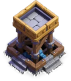
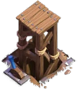
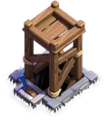
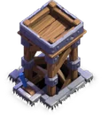
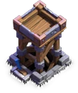
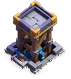
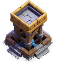

Archer Tower (Builder Base)
Updated: 26 August 2026 · By the Goblins Farm team
No foe can escape the Archer's arrows. This tower has a special switch - choose long range or fast attack!
Reference page. This entry carries verified level data but does not yet have a written strategy section. Behaviour and counter notes are being added across the wiki; the tables below are as complete as the source snapshot allows.
- Levels
- 10
- Size
- 3x3
- Village
- Builder Base
- Category
- Defense
- Damage per second
- 40
- Targets
- Ground and air
- Range
- 10 tiles
- Unlocked at
- Builder Hall 2
How it looks at each level






Stats by level
| Level | Hitpoints | DPS or effect | Build cost | Build time | Builder Hall |
|---|---|---|---|---|---|
| 1 | 500 | 40 DPS | 12,000 Builder Gold | 5 m | 2 |
| 2 | 575 | 44 DPS | 30,000 Builder Gold | 15 m | 3 |
| 3 | 660 | 48 DPS | 60,000 Builder Gold | 2 h | 3 |
| 4 | 760 | 53 DPS | 250,000 Builder Gold | 8 h | 4 |
| 5 | 875 | 59 DPS | 800,000 Builder Gold | 1 d | 5 |
| 6 | 1,050 | 64 DPS | 1,200,000 Builder Gold | 2 d | 6 |
| 7 | 1,250 | 71 DPS | 2,000,000 Builder Gold | 4 d | 7 |
| 8 | 1,450 | 78 DPS | 2,800,000 Builder Gold | 6 d | 8 |
| 9 | 1,650 | 86 DPS | 3,600,000 Builder Gold | 8 d | 9 |
| 10 | 1,850 | 94 DPS | 4,600,000 Builder Gold | 9 d | 10 |
Where these numbers come from. Read from Clash of Clans' own game files, client build 18.400.21. They are exact for that build and do not reflect anything released after it, so verify in game before committing an upgrade.
Game values are read from Supercell's own game files, reproduced as fan content under Supercell's Fan Content Policy. Goblins Farm is not affiliated with, endorsed, sponsored, or specifically approved by Supercell, and Supercell is not responsible for it.
Keep reading
Goblins Farm is not affiliated with, endorsed by, sponsored by, or specifically approved by Supercell. Clash of Clans is a trademark of Supercell Oy. This material is unofficial fan content produced under Supercell's Fan Content Policy. Game values change with every update; always verify in-game before committing an upgrade.